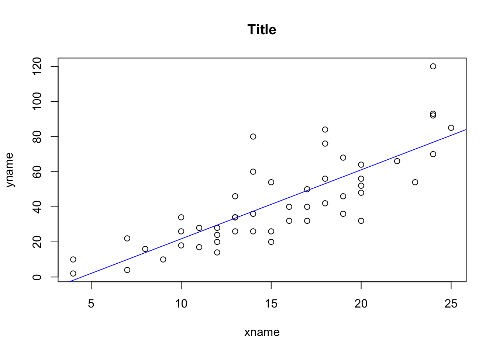
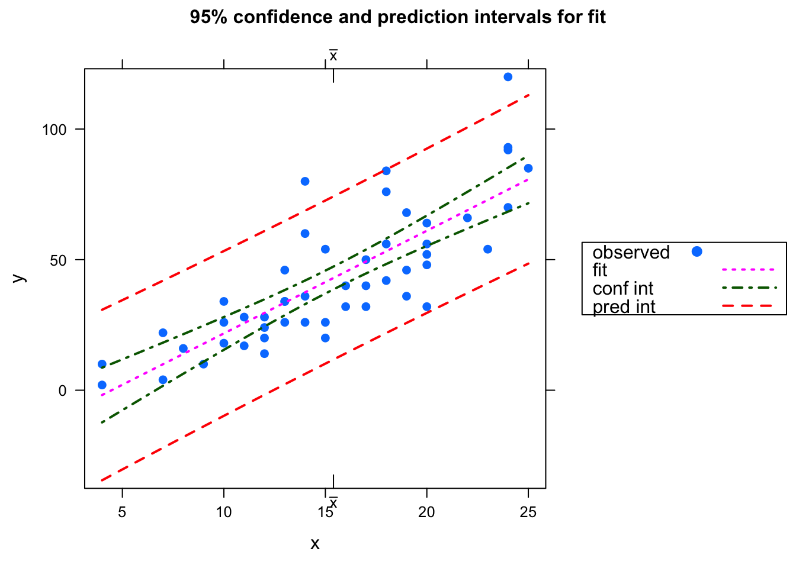

Chapter - 4 Simple regressions
Class given by: Walter Garcia-Fontes
4.1 Basics regressions
Regressions, correlation and dummy’s
Y = Dependent
X = Explanatory
Correlation
cor(x, y)[1] 0.8068949Creating the regression:
- To plot the regression model
- Evaluates the coefficient of the model
- Only the first colum estimattion
model <- lm(y~x, data = data)
summary(model)$coef Estimate Std. Error t value Pr(>|t|)
(Intercept) -17.579095 6.7584402 -2.601058 0.012318816153809090
x 3.932409 0.4155128 9.463990 0.000000000001489836est <- summary(model)$coef[,1]4.1.1 Summarizing regressions:
- Using stargazer package
library(stargazer)
stargazer(lm(y~x, data=data), type="text")
===============================================
Dependent variable:
---------------------------
y
-----------------------------------------------
x 3.932***
(0.416)
Constant -17.579**
(6.758)
-----------------------------------------------
Observations 50
R2 0.651
Adjusted R2 0.644
Residual Std. Error 15.380 (df = 48)
F Statistic 89.567*** (df = 1; 48)
===============================================
Note: *p<0.1; **p<0.05; ***p<0.01# Multiple models adjacent
model1 <- lm(y~x, data=data)
model2 <- lm(x~y, data=data)
stargazer(model1, model2, type="text")
==========================================================
Dependent variable:
----------------------------
y x
(1) (2)
----------------------------------------------------------
x 3.932***
(0.416)
y 0.166***
(0.017)
Constant -17.579** 8.284***
(6.758) (0.874)
----------------------------------------------------------
Observations 50 50
R2 0.651 0.651
Adjusted R2 0.644 0.644
Residual Std. Error (df = 48) 15.380 3.156
F Statistic (df = 1; 48) 89.567*** 89.567***
==========================================================
Note: *p<0.1; **p<0.05; ***p<0.01- Using summary function:
summary(lm(y~x))
Call:
lm(formula = y ~ x)
Residuals:
Min 1Q Median 3Q Max
-29.069 -9.525 -2.272 9.215 43.201
Coefficients:
Estimate Std. Error t value Pr(>|t|)
(Intercept) -17.5791 6.7584 -2.601 0.0123 *
x 3.9324 0.4155 9.464 0.00000000000149 ***
---
Signif. codes: 0 '***' 0.001 '**' 0.01 '*' 0.05 '.' 0.1 ' ' 1
Residual standard error: 15.38 on 48 degrees of freedom
Multiple R-squared: 0.6511, Adjusted R-squared: 0.6438
F-statistic: 89.57 on 1 and 48 DF, p-value: 0.00000000000149Regressions
Plotting regression
plot(y~x,data=data,
main="Title",
ylab="yname",
xlab="xname"
)
Including regression line:
plot(y~x,data=data,
main="Title",
ylab="yname",
xlab="xname"
)
abline(lm(y~x, data=data), col="blue")
Confidence interval around slope
confint(lm(y~x), level=0.95) 2.5 % 97.5 %
(Intercept) -31.167850 -3.990340
x 3.096964 4.767853Sub-sampling regression
Specify dimensions [,]. First is row. Column, second.
- Selects the rows where age is larger than 5.
- Lower than 5.
sub1 <- summary(lm(y~x, data=data["speed">=5,]))
sub2 <- summary(lm(y~x, data=data["speed"<=5,]))4.1.2 Dummy variables, diff in means
4.1.3 Regression + dummy
Y = Constant0 + B0 * X - Diff in means + B1 * variable1*2
Omitting the intercept:
Shows the means separately and not the difference between means. Tests whether the expected counts are different from zero.
lm(y ~ x - 1, data = data)
Call:
lm(formula = y ~ x - 1, data = data)
Coefficients:
x
2.909 Reorders group, to specific value to be first.
variable2 <- relevel(variable, “C”)
4.2 Prediction
model <- lm(y~x)
newdata <- data.frame(variablename = c(1:50))
pred <- predict(model, newdata = newdata)Prediction confidence interval:
- One value
- Multiple values from a existing data frame
pred1 <- predict(model, data.frame(valuename = x), interval = "confidence", level=0.95)
pred2 <- predict(model, newdata = newdata, interval = "confidence", level=0.95)Prediction interval
- One value
- Multiple values from a existing data frame
pred1 <- predict(model, data.frame(valuename = x), interval="predict",level=0.95)
pred2 <- predict(model, newdata, interval="predict",level=0.95)4.2.1 Confidence and prediction plotting
Adds: observed values, fitted line, conf interval, predicted interval
library(HH)
fit <- lm(y~x, data = data)
ci.plot(fit)
4.2.2 Prediction with dummy variables
Prediction = 𝛼1+𝛼2Constant Dummy+𝛽1𝑆𝑖𝑧𝑒+𝛽2Slope Dummy
4.2.3 Prediction intervals examples
Prediction
fit <- lm(y ~ x + d + d, data = data)
pred <- predict(fit, data.frame(VariableX = c(10), Dummy = c(1), Slopedummy = c(10)) )Confidence interval prediction
fit <- lm(y ~ x + d + d, data = data)
pred <- predict(fit, data.frame(VariableX = c(10), Dummy = c(1), Slopedummy = c(10), interval="confidence"))Prediction interval
fit <- lm(y ~ x + d + d, data = data)
pred <- predict(fit, data.frame(VariableX = c(10), Dummy = c(1), Slopedummy = c(10), interval="predict"))4.3 Data problems
Residual plot
# residual.plots(fitted(fit), resid(fit), sigma.hat(fit), main="Title")Influential measure test
im <- influence.measures(fit)4.3.1 Multicollinearity
F-test
fit <- lm(y~x + d, data = data)
anova(fit)Analysis of Variance Table
Response: y
Df Sum Sq Mean Sq F value Pr(>F)
x 1 21186 21185.5 89.567 0.00000000000149 ***
Residuals 48 11354 236.5
---
Signif. codes: 0 '***' 0.001 '**' 0.01 '*' 0.05 '.' 0.1 ' ' 14.3.2 Variance inflation factors
The variance inflation factor (vif) is \(1 / 1−R2\). A simple approach to identify collinearity among explanatory variables is the use of variance inflation factors (VIF). It is the ratio of variance in a model with multiple terms, divided by the variance of a model with one term alone. The higher the value, the higher the collinearity. A VIF for a single explanatory variable is obtained using the r-squared value of the regression of that variable against all other explanatory variables: A VIF is calculated for each explanatory variable and those with high values are removed. The definition of ‘high’ is somewhat arbitrary, but values in the range of 5-10 are commonly used for ‘high.’ If VIF value exceeding 4.0, or by tolerance less than 0.2 then there is a problem with multicollinearity (Hair et al., 2010). However, it depends on the researcher’s criteria. The lower the vif the better, but you shouldn’t be too concerned as long as your VIF is not greater than 10.
vif(fit) x d
1 NaN 4.3.3 ANOVA
One-way: one value
res.aov <- aov(y ~ x, data = data)
summary(res.aov) Df Sum Sq Mean Sq F value Pr(>F)
x 1 21185 21185 89.57 0.00000000000149 ***
Residuals 48 11354 237
---
Signif. codes: 0 '***' 0.001 '**' 0.01 '*' 0.05 '.' 0.1 ' ' 1Two-way: more than two factors
res.aov <- aov(y ~ x + d, data = data)
summary(res.aov) Df Sum Sq Mean Sq F value Pr(>F)
x 1 21185 21185 89.57 0.00000000000149 ***
Residuals 48 11354 237
---
Signif. codes: 0 '***' 0.001 '**' 0.01 '*' 0.05 '.' 0.1 ' ' 1With interaction
res.aov <- aov(y ~ x * d, data = data)
summary(res.aov) Df Sum Sq Mean Sq F value Pr(>F)
x 1 21185 21185 89.57 0.00000000000149 ***
Residuals 48 11354 237
---
Signif. codes: 0 '***' 0.001 '**' 0.01 '*' 0.05 '.' 0.1 ' ' 1Three-way
- Three way
- With interaction
summary(aov(y ~ x + d, data=data)) Df Sum Sq Mean Sq F value Pr(>F)
x 1 21185 21185 89.57 0.00000000000149 ***
Residuals 48 11354 237
---
Signif. codes: 0 '***' 0.001 '**' 0.01 '*' 0.05 '.' 0.1 ' ' 1summary(aov(y ~ x + d, data=data)) Df Sum Sq Mean Sq F value Pr(>F)
x 1 21185 21185 89.57 0.00000000000149 ***
Residuals 48 11354 237
---
Signif. codes: 0 '***' 0.001 '**' 0.01 '*' 0.05 '.' 0.1 ' ' 1MANOVA: Multiple factors
- Test in difference
- Test separately
test_manova <- manova(cbind(y, d) ~ x, data = data) summary(test_manova) summary.aov(test_manova)
4.3.4 Linearizing variables
logged <- log(iris$Sepal.Length) # non-linear
quad <- cars$speed ^ 2 # quadratic